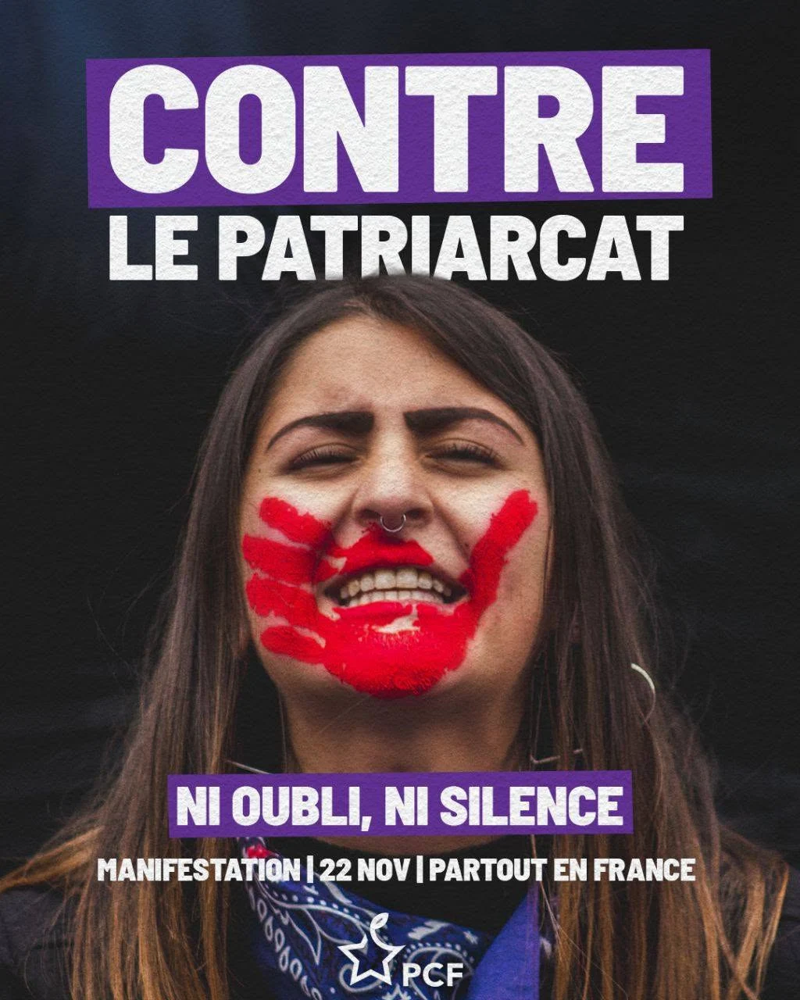
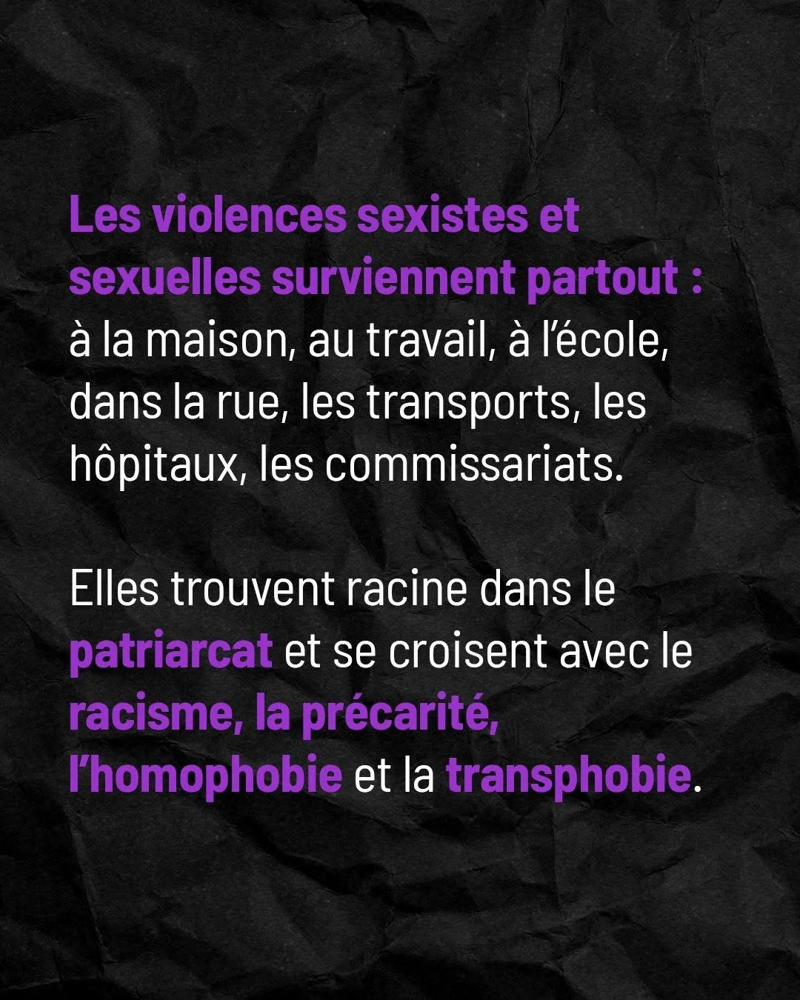
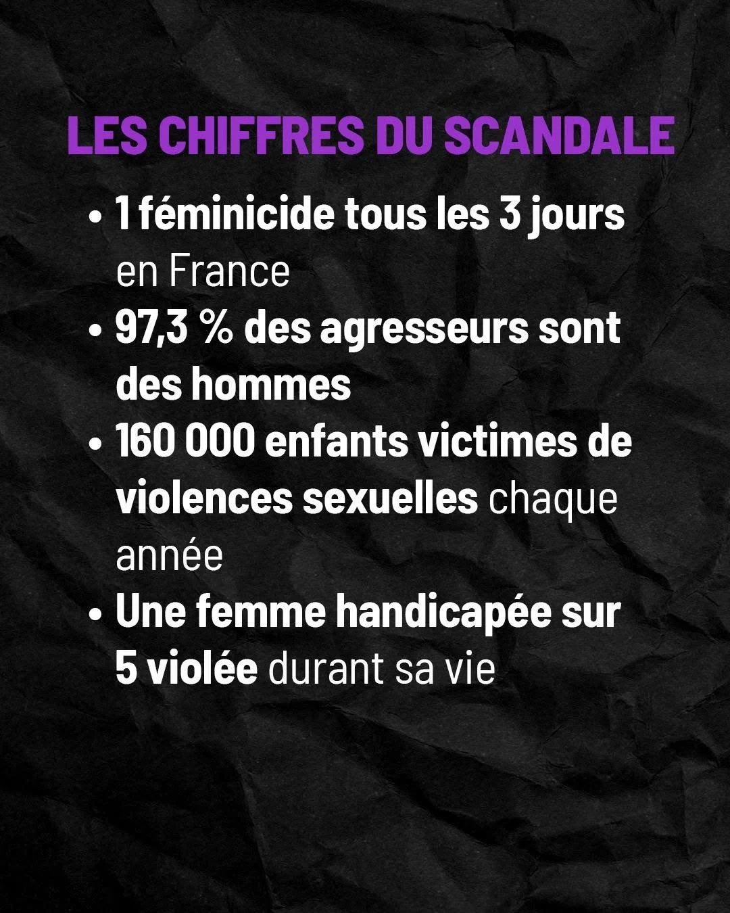
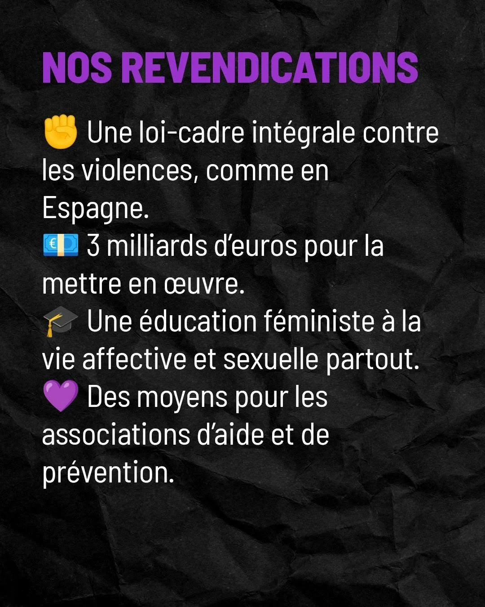
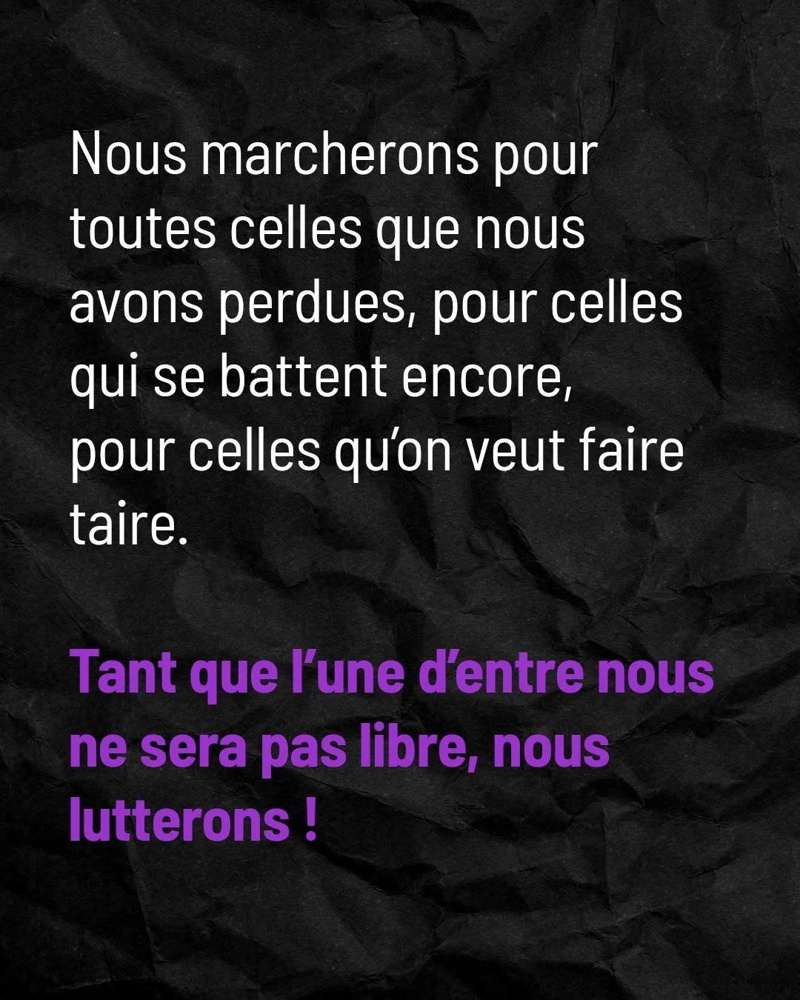

Publication relayée par le PCF 79
Le PCF appelle à la mobilisation contre les violences sexistes et sexuelles
Date de mise à jour indiquée par Facebook · 19 novembre 2025
Texte de la publication · PCF national
CONTRE LE PATRIARCAT : NI OUBLI, NI SILENCE !
Un féminicide tous les 3 jours en France. Les violences sexistes et sexuelles surviennent partout : à la maison, au travail, à l'école, etc.
Elles prennent racine dans le patriarcat et se croisent avec le racisme, la précarité et l'homophobie.
Nous demandons une loi-cadre intégrale contre les violences et 3 milliards d'euros pour la mettre en œuvre.
Nous marcherons pour toutes celles que nous avons perdues. Tant que l'une d'entre nous ne sera pas libre, nous lutterons !





Sources
PCF national · publication relayée par le PCF 79 · bibliothèque Facebook · AR-0002-FB-00954
À lire aussi · À Niort, l’appel de Nous Toutes 79 contre les violences sexistes et sexuelles